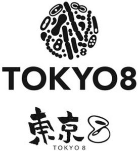

Trade Mark Journal No.2025/009 28 February 2025
WO0000001838975 (1,3)
Office of origin: Japan
Date of International Registration:29 October 2024
Date of designation in the UK:
29 October 2024

International priority date claimed: 16 May 2024
(Japan)
- Class 1
- Chemicals; chemical products used for the manufacture of odor neutralizing preparations, deodorants, deodorizers for industrial purposes; mineral-based chemicals for use as raw materials for cosmetics; chemicals for use in the manufacture of cosmetics, soaps and perfumery and in the manufacture of industrial products; microalgae-derived chemical additives for food, beverages; industrial odor neutralizing preparations using microorganisms; composting accelerator containing microorganisms; wastewater treatment agent with application of microorganisms; organic decomposition treatment agent with application of microorganisms; bacteriological culture mediums, other than for medical or veterinary purposes; bacterial preparations other than for medical or veterinary use; preparations of microorganisms, other than for medical and veterinary use; bacterial preparations for the food industry; substances for regulating plant growth; agricultural chemicals, except fungicides, herbicides, insecticides and parasiticides; horticulture chemicals, except fungicides, herbicides, insecticides and parasiticides; soil improving preparations; soil improving preparations using microorganisms; biostimulants for plants; biostimulants being plant hormones; biostimulants being plant nutrition preparations; fertilizers; organic fertilisers; fertilizers using microorganisms; microorganism-containing soil for plant growth; bacterial cultures for the food industry; bacteria for waste water treatment; cultures of microorganisms, other than for medical and veterinary use; microorganisms for use in water treatment.
- Class 3
- Breath fresheners, not for medical purposes; deodorants for pets; breath freshening preparations for personal hygiene; breath freshening preparations containing microbial products; animal deodorants containing microbial products; soaps and detergents; deodorant soap; laundry soap; cosmetic soaps; cleaning agents and preparations; soaps and detergents containing microbial products; cosmetics containing microbial products; cosmetics containing enzymes of microbial origin; pet stain removers; dentifrices and mouthwashes, non-medicated; non-medicated mouth washes for pets; cosmetics; deodorizing cosmetics; deodorizing cosmetics containing microbial products; perfumery, essential oil; essential oils; incense; air fragrancing preparations; air fragrancing preparations with deodorizing effect.
Taiyo Yuka Co., Ltd.
Representative: SATO Sunao, c/o Shobayashi International Patent and Trademark Office,, Sapia Tower, 1-7-12 Marunouchi, Chiyoda-ku, Tokyo 100-0005, JAPAN